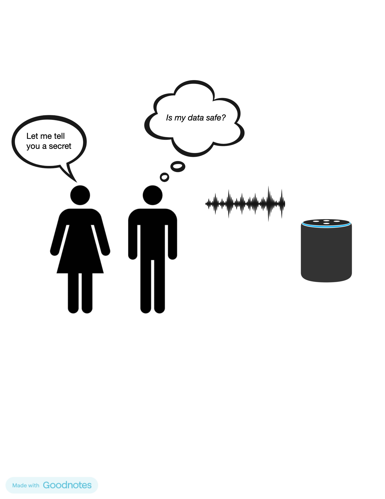

Future work should focus on developing better voice recognition systems that can work with different dialects and speech. Efforts must also be made towards improving the security features and establishing better policies for data protection. Solving these problems will ensure that voice-activated assistants remain useful tools for people with disabilities without compromising their ethical and social use. Research should also further explore adaptive algorithms for users with special needs, such as speech or cultural preferences. Collaboration between policymakers, developers, and user advocacy groups must continue to play a key role in developing appropriate privacy policies and ethical frameworks. Therefore, based on the above analysis, it can be concluded that this technology has made significant progress but still requires further evolution and moderation for sustainable and equitable development.
